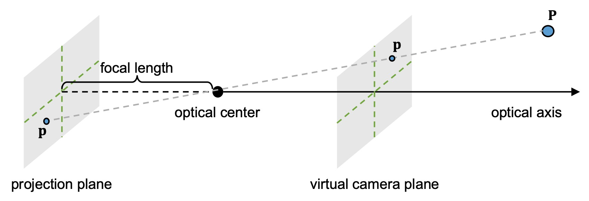
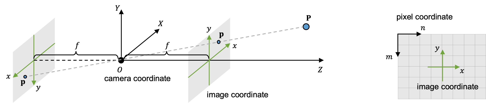
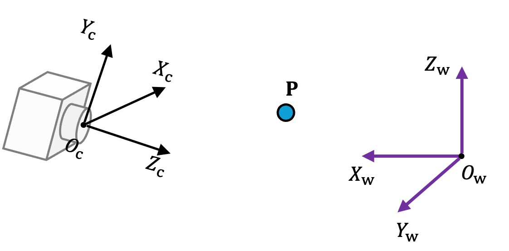
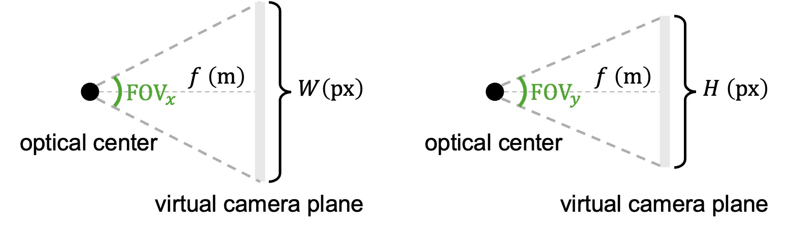
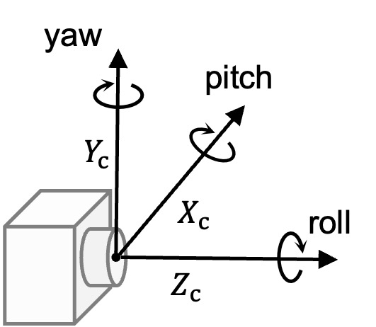

Camera Models
Pinhole Camera
小孔成像 如下图所示，当物体和墙面之间没有任何遮挡时，到达墙面上某一点的光来自于四面八方，其反射的光是所有到达该点的光的积分，因此整体上墙面只能呈现平均光强而不能成像。倘若在物体和墙面之间插入一个带有小孔的遮光平面，使得光线只能从小孔通过，那么到达墙面上某一点的光源就被限制在一个很小的范围，从而能在墙面上形成物体的倒像。

针孔相机 基于小孔成像原理，我们可以构建针孔相机模型。如下图所示，空间中一点 \(\mathbf P\) 发出/反射的光线经过小孔到达投影平面 \(\mathbf p\) 处。其中，小孔称作相机光心 (optical center)，光心到投影平面的垂线称作光轴 (optical axis)，光心到投影平面的距离称作焦距 (focal length). 由于投影平面上成的像是倒像，方便起见，我们可以假想在相机光心前有一个与投影平面对称的虚拟成像平面，则物体在该虚拟成像平面上成正像。

Camera Intrinsics
三个坐标系 在针孔相机模型中，有三个重要的坐标系：
- 相机坐标系 (camera coordinate)：以相机光心为原点建立右手坐标系，\(Z\) 轴沿光轴方向，\(X,Y\) 轴平行于成像平面的水平和垂直方向。空间中 \(\mathbf P\) 点在相机坐标系中的坐标记作 \((X_\text{c},Y_\text{c},Z_\text{c})\).
- 图像坐标系 (image coordinate)：在相机投影平面上，以光轴与投影平面的交点为原点，\(x,y\) 轴沿相机坐标系相反方向建立平面坐标系。等价地，也可以认为在虚拟成像平面上，以 \(x,y\) 轴方向与相机坐标系相同的方向建立平面坐标系。\(\mathbf P\) 点在投影平面或虚拟成像平面上的投影点 \(\mathbf p\) 的坐标记作 \((x,y)\).
- 像素坐标系 (pixel coordinate)：将投影平面上成的像离散化为像素，就得到了我们最终保存的数字图像。数字图像一般以左上角为原点建系，单位为像素，第 \(m\) 行 \(n\) 列的像素 \(\mathbf q\) 的坐标记作 \((n,m)\).

齐次坐标 为了公式书写的简洁，我们引入齐次坐标的概念。齐次坐标在非齐次坐标 \((x,y)\) 上增加一个分量 \((x,y,1)\)，并认为任意缩放倍数 \(k\neq0\) 下的齐次坐标都是等价的 \((x,y,1)\sim (kx,ky,k)\)，因为我们总可以通过把最后一个分量缩放回 1 重新得到非齐次坐标。对上述三个坐标系，本文采用如下记号表示非齐次和齐次坐标： \[ \mathbf P=\begin{bmatrix}X_\text{c}\\Y_\text{c}\\Z_\text{c}\end{bmatrix},\quad \bar{\mathbf P}=\begin{bmatrix}X_\text{c}\\Y_\text{c}\\Z_\text{c}\\1\end{bmatrix},\quad \mathbf p=\begin{bmatrix}x\\y\end{bmatrix},\quad \bar{\mathbf p}=\begin{bmatrix}x\\y\\1\end{bmatrix},\quad \mathbf q=\begin{bmatrix}n\\m\end{bmatrix},\quad \bar{\mathbf q}=\begin{bmatrix}n\\m\\1\end{bmatrix} \] 坐标系变换（相机→图像） 根据相似三角形，容易知道相机坐标系和图像坐标系之间有如下关系： \[ x/X_\text{c}=y/Y_\text{c}=f/Z_\text{c} \] 如果用一个矩阵描述相机坐标 \((X_\text{c},Y_\text{c},Z_\text{c})\) 到图像坐标 \((x,y)\) 的变换，则有： \[ \bar{\mathbf p}=\begin{bmatrix}x\\y\\1\end{bmatrix}\sim\begin{bmatrix}fX_\text{c}\\fY_\text{c}\\Z_\text{c}\end{bmatrix}=\underbrace{\begin{bmatrix}f&0&0&0\\0&f&0&0\\0&0&1&0\end{bmatrix}}_{\mathbf K_1}\begin{bmatrix}X_\text{c}\\Y_\text{c}\\Z_\text{c}\\1\end{bmatrix}=\mathbf K_1\bar{\mathbf P} \] 坐标系变换（图像→像素） 在图像坐标系中，原点在图像的中心且坐标单位为米；而在像素坐标系中，原点在图像的左上角且坐标单位为像素。因此二者之间相差一个仿射变换。具体而言，假设相机在 \(x,y\) 轴方向上的分辨率分别为每米 \(N_x,N_y\) 个像素，图像中心位于第 \(c_y\) 行第 \(c_x\) 列，则有： \[ n=xN_x+c_x,\quad m=-yN_y+c_y \] 同样用一个矩阵描述图像坐标 \((x,y)\) 到像素坐标 \((n,m)\) 的变换，则有： \[ \bar{\mathbf q}=\begin{bmatrix}n\\m\\1\end{bmatrix}=\underbrace{\begin{bmatrix}N_x&0&c_x\\0&-N_y&c_y\\0&0&1\end{bmatrix}}_{\mathbf K_2}\begin{bmatrix}x\\y\\1\end{bmatrix}=\mathbf K_2\bar{\mathbf p} \] 坐标系变换（相机→像素） 综合上述两次变换可知相机坐标 \((X_\text{c},Y_\text{c},Z_\text{c})\) 到像素坐标 \((n,m)\) 的变换为： \[ \bar{\mathbf q}=\begin{bmatrix}n\\m\\1\end{bmatrix}\sim\underbrace{\begin{bmatrix}a&0&c_x&0\\0&b&c_y&0\\0&0&1&0\end{bmatrix}}_{\bar{\mathbf K}=\mathbf K_2\mathbf K_1}\begin{bmatrix}X_\text{c}\\Y_\text{c}\\Z_\text{c}\\1\end{bmatrix}=\bar{\mathbf K}\bar{\mathbf P} \] 其中 \(a=fN_x,\,b=-fN_y\). 由于矩阵 \(\bar{\mathbf K}\) 的最后一列全是 0，上式也可写作： \[ \bar{\mathbf q}=\begin{bmatrix}n\\m\\1\end{bmatrix}\sim\underbrace{\begin{bmatrix}a&0&c_x\\0&b&c_y\\0&0&1\end{bmatrix}}_{\mathbf K}\begin{bmatrix}X_\text{c}\\Y_\text{c}\\Z_\text{c}\end{bmatrix}=\mathbf K\mathbf P \] 称矩阵 \(\mathbf K\in\mathbb R^{3\times 3}\) 或 \(\bar{\mathbf K}\in\mathbb R^{3\times 4}\) 为相机的内参 (camera intrinsics).
Camera Extrinsics
世界坐标系 上一节中的所有坐标都是物体相对于相机的坐标，而物体在客观世界中的坐标就是世界坐标。记世界坐标为 \(\mathbf P_\text{w}=(X_\text{w},Y_\text{w},Z_\text{w})\)，相机坐标为 \(\mathbf P_\text{c}=(X_\text{c},Y_\text{c},Z_\text{c})\).

坐标系变换（世界→相机） 世界坐标和相机坐标之间的关系由相机的位置和旋转角度决定。设相机光心在世界坐标系中的坐标为 \(\mathbf c\in\mathbb R^3\)，光轴朝向由旋转矩阵 \(\mathbf R\in\mathbb R^{3\times 3}\) 描述，则世界坐标到相机坐标的变换为： \[ \mathbf P_\text{c}=\mathbf R(\mathbf P_\text{w}-\mathbf c)=\mathbf R\mathbf P_\text{w}-\mathbf R\mathbf c=\mathbf R\mathbf P_\text{w}+\mathbf t \] 其中定义 \(\mathbf t=-\mathbf R\mathbf c\). 写作矩阵形式为： \[ \bar{\mathbf P}_\text{c}=\begin{bmatrix}X_\text{c}\\Y_\text{c}\\Z_\text{c}\\1\end{bmatrix}=\underbrace{\begin{bmatrix}\mathbf R&\mathbf t\\\mathbf 0^\mathsf T&1\end{bmatrix}}_{\bar{\mathbf E}}\begin{bmatrix}X_\text{w}\\Y_\text{w}\\Z_\text{w}\\1\end{bmatrix}=\bar{\mathbf E}\bar{\mathbf P}_\text{w} \] 称矩阵 \(\mathbf E=[\mathbf R;\mathbf t]\in\mathbb R^{3\times 4}\) 或 \(\bar{\mathbf E}\in\mathbb R^{4\times4}\) 为相机的外参 (camera extrinsics).
坐标系变换（相机→世界） 反过来，相机坐标到世界坐标的变换为： \[ \mathbf P_\text{w}=\mathbf R^\mathsf T\mathbf P_\text{c}+\mathbf c \] 其中由于旋转矩阵是正交矩阵，所以 \(\mathbf R^{-1}=\mathbf R^\mathsf T\). 写作矩阵形式，则为： \[ \bar{\mathbf P}_\text{w}=\underbrace{\begin{bmatrix}\mathbf R^\mathsf T&\mathbf c\\\mathbf 0^\mathsf T&1\end{bmatrix}}_{\bar{\mathbf E}^{-1}}\bar{\mathbf P}_\text{c}=\bar{\mathbf E}^{-1}\bar{\mathbf P}_\text{c} \] 坐标系变换（世界→像素） 结合上文中所有的坐标变换关系，可知直接由世界坐标到像素坐标的变换为： \[ \bar{\mathbf q}\sim\mathbf K(\mathbf R\mathbf P_\text{w}+\mathbf t)=\mathbf K\mathbf R(\mathbf P_\text{w}-\mathbf c)=\bar{\mathbf K}\bar{\mathbf E}\bar{\mathbf P}_\text{w} \] 其中 \(\mathbf K\) 或 \(\bar{\mathbf K}\) 为相机内参，\(\mathbf E\) 或 \(\bar{\mathbf E}\) 为相机外参。
Other Parameters
视场角 (FOV) FOV 表示相机能捕捉的视野范围，与焦距和图像长宽有关。下图是针孔相机模型的俯视和侧视图。由图容易知道 \(x,y\) 方向上的 FOV 分别为： \[ \begin{gather} \text{FOV}_x=2\arctan\left(\frac{W}{2fN_x}\right)=2\arctan\left(\frac{W}{2|a|}\right)\\ \text{FOV}_y=2\arctan\left(\frac{H}{2fN_y}\right)=2\arctan\left(\frac{H}{2|b|}\right) \end{gather} \] 其中 \(a,b\) 就是相机内参矩阵 \(\mathbf K\) 中的 \(a,b\)，表示横/纵向以像素为单位的焦距。

欧拉角 除了旋转矩阵 \(\mathbf R\in\mathbb R^{3\times 3}\)，相机的旋转也可以用欧拉角来描述。如下图所示，称沿 X、Y、Z 轴的三个旋转分别为 pitch、yaw 和 roll. 假设按照 ZYX 顺序旋转，则有： \[ \mathbf R= \underbrace{\begin{bmatrix}\cos\gamma&-\sin\gamma&0\\\sin\gamma&\cos\gamma&0\\0&0&1\end{bmatrix}}_{\mathbf R_Z} \underbrace{\begin{bmatrix}\cos\beta&0&-\sin\beta\\0&1&0\\\sin\beta&0&\cos\beta\end{bmatrix}}_{\mathbf R_Y} \underbrace{\begin{bmatrix}1&0&0\\0&\cos\alpha&-\sin\alpha\\0&\sin\alpha&\cos\alpha\end{bmatrix}}_{\mathbf R_X} \] 一般而言 \(\mathbf R_Z\mathbf R_Y\mathbf R_X\neq\mathbf R_X\mathbf R_Y\mathbf R_Z\)，因此旋转顺序很重要，在使用游戏引擎时需要注意查看文档。

Plücker 坐标 空间中的一条直线可以由其过的一点 \(\mathbf p\) 和方向向量 \(\mathbf d\) 决定。定义 \(\mathbf m=\mathbf p\times\mathbf d\)，称作 moment vector，可知 \(\mathbf m\) 与直线上 \(\mathbf p\) 点的选取无关。称 \((\mathbf d,\mathbf m)\in\mathbb R^6\) 为该直线的 Plücker 坐标。Plücker 坐标有如下性质：
- \(\mathbf d\cdot\mathbf m=0\)；
- \((\mathbf d,\mathbf m)\) 与 \((k\mathbf d,k\mathbf m)\) 表示同一条直线，其中 \(k\neq 0\)；
- 直线到原点的距离为 \(\Vert\mathbf m\Vert/\Vert\mathbf d\Vert\)；
- 点 \(\mathbf q\) 在直线上当且仅当 \(\mathbf q\times\mathbf d=\mathbf m\).
在相机模型中，每个图像像素都对应着 3D 空间中一条连接光心和物体的光线，因此每个像素都可以找到一个对应的 Plücker 坐标。具体而言，对于像素 \(\mathbf q=(n,m)\)，由上文的推导可知其对应 3D 光线的单位方向向量为： \[ \mathbf d=\texttt{normalize}(\mathbf P_\text{w}-\mathbf c)=\texttt{normalize}\left(\mathbf R^{\mathsf T}\mathbf K^{-1}\bar{\mathbf q}\right) \] 因此该像素对应的 Plücker 坐标为 \((\mathbf d,\mathbf c\times\mathbf d)\). 对所有像素计算 Plücker 坐标得到一个 \(\mathbb R^{H\times W\times 6}\) 的 tensor，称作 Plücker embedding，在涉及相机的网络模型中（例如相机控制的视频生成）常被使用。
References
- Antonio Torralba, Phillip Isola, and William Freeman. Foundations of Computer Vision. https://visionbook.mit.edu/ ↩︎
- 为什么Roll、Pitch、Yaw的定义如此混乱？本文来讲透欧拉角的本质. https://zhuanlan.zhihu.com/p/1940774727674238008 ↩︎
- Yan-Bin Jia. Plücker Coordinates for Lines in the Space. https://faculty.sites.iastate.edu/jia/files/inline-files/plucker-coordinates.pdf ↩︎